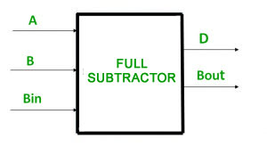
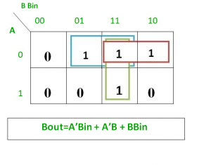

A full subtractor is a combinational circuit that performs subtraction of two bits, one is minuend and other is subtrahend, taking into account borrow of the previous adjacent lower minuend bit. This circuit has three inputs and two outputs. The three inputs A, B and Bin, denote the minuend, subtrahend, and previous borrow, respectively. The two outputs, D and Bout represent the difference and output borrow, respectively.

Truth Table –

From above table we can draw the K-Map as shown for “difference” and “borrow”.


Logical expression for difference –
D = A’B’Bin + A’BBin’ + AB’Bin’ + ABBin
= Bin(A’B’ + AB) + Bin’(AB’ + A’B)
= Bin( A XNOR B) + Bin’(A XOR B)
= Bin (A XOR B)’ + Bin’(A XOR B)
= Bin XOR (A XOR B)
= (A XOR B) XOR Bin
Logical expression for borrow –
Bout = A’B’Bin + A’BBin’ + A’BBin + ABBin
= A’B’Bin +A’BBin’ + A’BBin + A’BBin + A’BBin + ABBin
= A’Bin(B + B’) + A’B(Bin + Bin’) + BBin(A + A’)
= A’Bin + A’B + BBin
OR
Bout = A’B’Bin + A’BBin’ + A’BBin + ABBin
= Bin(AB + A’B’) + A’B(Bin + Bin’)
= Bin( A XNOR B) + A’B
= Bin (A XOR B)’ + A’B
Logic Circuit for Full Subtractor –

Implementation of Full Subtractor using Half Subtractors –
2 Half Subtractors and an OR gate is required to implement a Full Subtractor.

Reference – Full Subtractor – Wikipedia